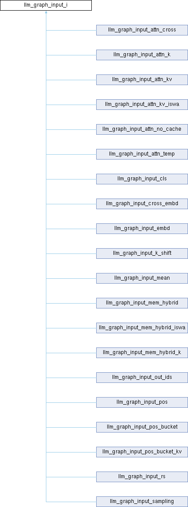

- Generated by
 1.16.1
1.16.1
|
Neura
Gesture and voice-controlled desktop assistant
|

Public Member Functions | |
| virtual void | set_input (const llama_ubatch *ubatch)=0 |
| virtual bool | can_reuse (const llm_graph_params ¶ms) |
Protected Attributes | |
| int | debug = 0 |